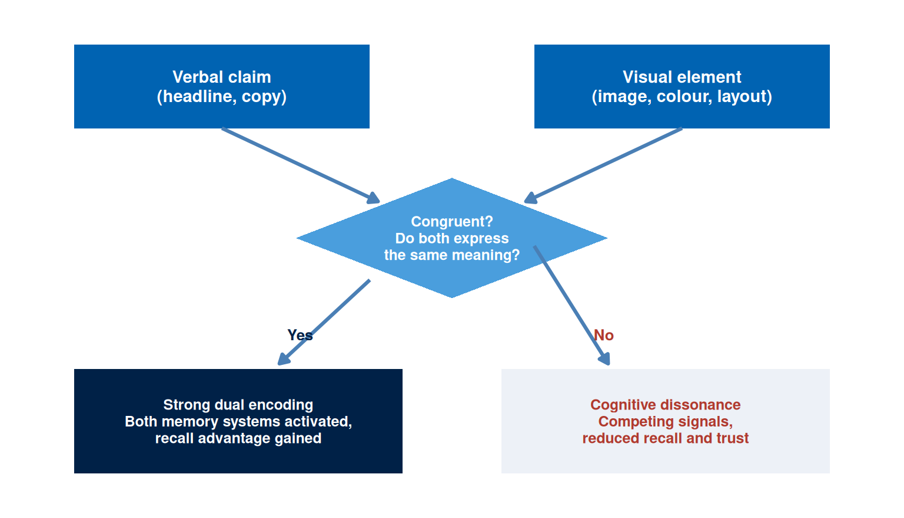
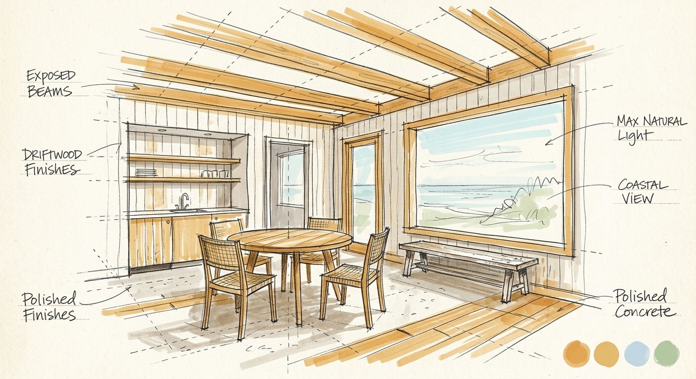
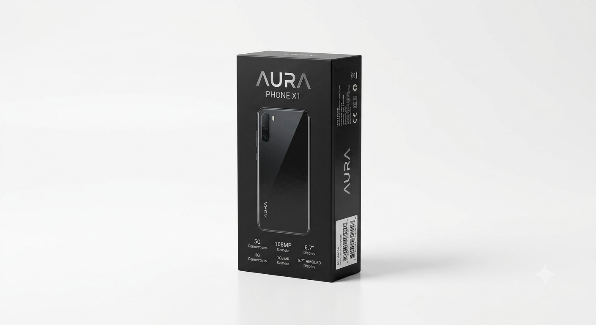
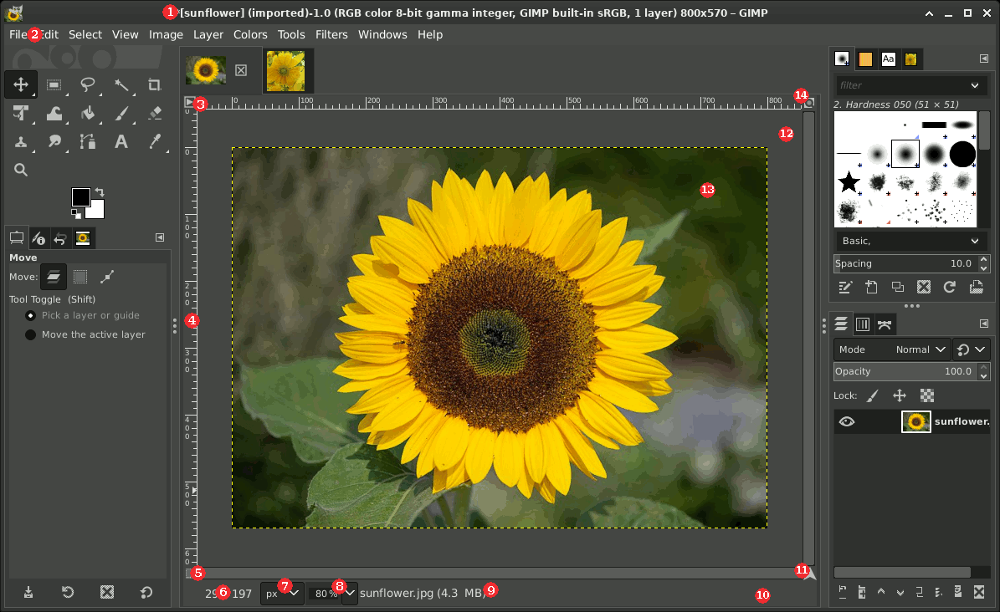
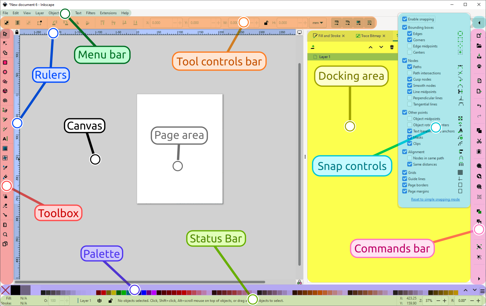
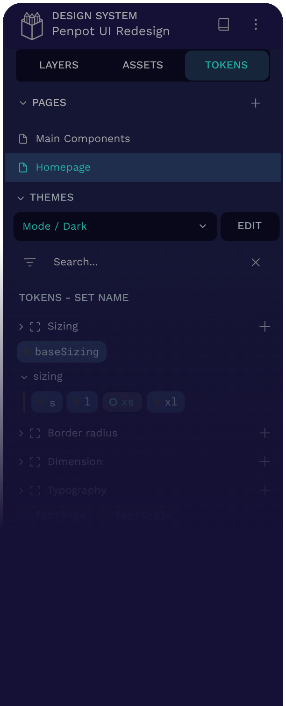

Week 3: Persuasive Imagery and Visual Design
NoteOverview
Last week you built a positioning and planning canvas: a target segment, a positioning claim, a hierarchy stage, and an ELM processing route, each entry supported by evidence or flagged as an assumption. That canvas gives you a claim worth making, but it says nothing about whether anyone will stop long enough to hear it. An image does that work. It tells the audience, in a fraction of a second, whether your claim deserves their attention, before they have read a single word of the copy that carries it. Most campaigns fail exactly in this gap, between a well-reasoned positioning statement and a visual asset that earns a second glance. Words describe an offer. Images produce a reaction to it, and that reaction arrives before the audience decides whether to keep reading. The reaction follows predictable patterns rooted in how the human perceptual system processes visual information, how culture loads images with meaning, and how platform context shapes what a person notices and ignores. This chapter works through all three, giving you a theoretical account of why some images persuade more effectively than others, a practical vocabulary for evaluating and producing digital visual assets, and a set of decision rules for choosing formats, checking accessibility, and using AI image tools responsibly.
The artefact you produce this week is a visual asset set: a small, purposeful collection of images, templates, or design specifications tied to your campaign’s positioning claim and hierarchy stage. This week’s learning design allocates nine hours to build it: a one-hour lecture, a two-hour tutorial, and six hours of self-directed study.
This Week’s Lecture
Lecture Persuasive Imagery and Visual Design
Discussion
1 Introduction
⏱ 10 min
Week overview, visual persuasion brief, and Week 2 canvas handover.
Acquisition
2 Theory and Application
⏱ 30 min
Cognitive fluency, dual coding, semiotics, visual hierarchy, accessibility, AI imagery, and a worked example.
Practice
3 Guided Worked Example
⏱ 15 min
Applying the evidence framework to the Villa College visual asset set.
Assessment
4 Attendance and Exit Check
⏱ 5 min
Attendance, Moodle concept check.
Learning Objectives
After studying this chapter, you should be able to:
- Explain how cognitive fluency and dual coding theory predict audience responses to visual stimuli.
- Apply semiotic principles to interpret and produce digital images with intentional connotative meaning.
- Describe the principles of visual hierarchy and explain how they direct audience attention in digital formats.
- Evaluate a visual asset against platform format requirements and accessibility standards.
- Distinguish between uses of AI image generation that support campaign planning and uses that undermine evidence standards.
- Produce a visual asset set aligned to a positioning claim, a hierarchy stage, and an ELM processing route.
- Apply the evidence framework to visual claims: classify image choices as evidence-based, inferred, or assumed.
NoteHow to use this chapter
This chapter assumes you have a completed Week 2 canvas. Every design decision this week should be traceable back to your target segment, your ELM processing route, and your hierarchy stage. A visual asset with no traceable canvas decision remains a creative exercise rather than a campaign component. Read the sections below before the lecture and bring your Week 2 canvas to every session: the tutorial produces a visual asset set tied directly to your canvas decisions, so arriving with that document open will save you time.
Why Images Persuade
The persuasive force of an image is a consequence of how the perceptual and cognitive system processes visual input rather than a matter of aesthetics. When a person encounters an image, recognition occurs in approximately 13 milliseconds (Potter, W. J., 2014). This occurs long before any conscious evaluation of the image’s argument or claim. The initial emotional and attitudinal response generated at that speed shapes whether the person continues to engage with the accompanying text, follows a call to action, or scrolls past.
This speed creates both an opportunity and a risk for campaign designers. The opportunity is that a well-designed image can establish relevance, credibility, and emotional alignment before the audience has decided whether to pay attention. The risk is that an image that triggers the wrong association, signals low quality, or violates the audience’s expectations for the category or platform will end engagement before the argument is ever encountered.
Four theoretical frameworks explain the mechanisms through which these effects operate: cognitive fluency theory, dual coding theory, semiotics, and visual hierarchy. Each predicts a different aspect of the audience’s response and implies a different set of design decisions.
Cognitive Fluency
Cognitive fluency is the subjective ease with which mental content is processed (Reber, R., Schwarz, N., and Winkielman, P., 2004). When a stimulus is easy to process, the experience of ease is attributed to familiarity, truth, and quality. When a stimulus is difficult to process, the experience of effort may be attributed to unfamiliarity, implausibility, or poor quality. This attribution is often unconscious.
For digital campaign design, cognitive fluency predicts several specific effects. Images with high contrast between the main subject and background are processed more easily and rated as more credible. Typography that is large enough, spaced sufficiently, and set in a familiar face is processed more easily and associated with higher perceived quality of the offering. Layouts that follow familiar conventions for the category (a clear hero image, a headline, a supporting claim, a call to action) are processed more easily than unconventional layouts, and this ease is attributed to the brand rather than the design convention.
Cognitive fluency rewards familiarity, but a design built entirely from familiar conventions risks disappearing into the background, because attention comes from novelty rather than repetition. The practical balance is: use familiar structures and conventions to build processing ease, then introduce one focal element of controlled novelty to create the attention trigger. A campaign that violates all conventions simultaneously will be novel but unprocessable. A campaign that is entirely conventional will be processable but invisible.
TipTheory-to-decision bridge
Cognitive fluency theory states that ease of processing is attributed to quality and credibility. This changes the design decision: before introducing unconventional visual choices, evaluate whether the effort imposed on the audience will be attributed positively or negatively. High-contrast, legible, convention-respecting layouts build trust. Complexity that serves no navigational or argumentative purpose costs credibility.
Dual Coding Theory
Dual coding theory, developed by Paivio, proposes that the brain processes verbal and non-verbal information through two distinct but interconnected systems (Paivio, A., 1986). The verbal system handles language, while the non-verbal system handles images, spatial relations, and sensory experience. When a message activates both systems simultaneously, memory encoding is stronger and recall is more reliable than when only one system is engaged.
For campaign design, dual coding theory predicts that images paired with verbal content are more memorable than either alone. The pairing must be congruent: the image should illustrate or amplify the verbal claim rather than contradict or distract from it. A headline stating “learn at your own pace” paired with an image of a student in a cramped, regimented classroom activates both systems but creates cognitive dissonance. A headline paired with an image that embodies the same meaning reinforces both the encoding and the attribution.
Dual coding also explains the effectiveness of infographics and data visualisations. A statistic presented as a number activates the verbal system. The same statistic presented as a proportional visual activates both systems, anchors the magnitude to a visual referent, and produces more durable recall. Campaign teams that present evidence only in text form are leaving a substantial encoding advantage unused.
TipTheory-to-decision bridge
Dual coding theory states that verbal and visual encoding reinforce each other when the two systems are activated by congruent stimuli. This changes the design decision: each visual asset should be evaluated for verbal-visual congruence. The image should reinforce the headline rather than merely accompany it. If the image can be replaced with any other image without changing the meaning of the asset, it is decorative rather than functional and earns no dual-coding advantage.
Semiotics and Connotation
Semiotics is the study of signs and the systems through which meaning is produced and communicated. Barthes distinguished between the denotative meaning of an image (what it literally depicts) and its connotative meaning (the cultural associations, values, and attitudes it activates in the viewer) (Barthes, R., 1977). Every commercial image makes connotative choices, whether the designer intends them deliberately or overlooks them entirely.
A photograph of a beach in the Maldives denotes turquoise water, white sand, and palm trees. It connotes luxury, exclusivity, escape, and distance from urban stress. However, those connotations vary by audience. For a domestic Maldivian audience, the same image may connote ordinariness (a beach they see daily), environmental concern (coral bleaching, erosion), or pride in national heritage, depending on the context and the audience’s relationship to the landscape. An international tourism campaign and a domestic environmental campaign can use visually similar images with entirely different connotative effects because the audience’s cultural codes differ.
Kress and van Leeuwen developed a grammar of visual design that extends semiotic analysis to layout, colour, and spatial organisation (Kress, G. and van Leeuwen, T., 2006). Key principles include: salience (which element the layout places as most visually dominant), framing (whether elements are separated or connected), and information value (the conventional associations of top/bottom and left/right positioning in Western reading conventions). In digital layouts, these principles operate whether the designer applies them deliberately or leaves them to chance. The practical implication is that visual choices should be treated as intentional claims, evaluated in the same way as verbal claims: what does this image assert, and is that assertion consistent with the positioning statement?
TipTheory-to-decision bridge
Semiotic theory states that images communicate through culturally loaded codes and that denotative and connotative meanings can diverge sharply across audience segments. This changes the design decision: before finalising a visual asset, evaluate the connotative meaning from the perspective of the specific target segment rather than the designer’s cultural position. What does this image mean to them, in this context, on this platform?
Visual Hierarchy and Composition
Visual hierarchy is the arrangement of elements in a layout so that the viewer’s eye moves through them in the intended sequence. It is achieved through contrast, scale, colour, placement, and white space. In the absence of intentional hierarchy, audiences impose their own reading order, which may lead them to the price before the value claim, to the disclaimer before the benefit, or away from the call to action entirely.
The F-pattern and Z-pattern describe typical eye-movement paths on digital layouts. Research using eye-tracking shows that users reading dense text-heavy pages follow an F-shaped pattern: they read the first line or two fully, then scan the left edge downward, moving right only at intervals (Nielsen, J., 2006). For visual-dominant layouts with less text, a Z-pattern tends to apply: the eye starts at the top left, moves to the top right, drops diagonally to the bottom left, and ends at the bottom right. These patterns have direct implications for the placement of the headline, the evidence, and the call to action.
Gestalt principles describe how the visual system organises elements into patterns and wholes before conscious attention is applied. Ten principles are commonly identified, and Figure 2 illustrates each one: proximity, similarity, closure, continuity, figure-ground, symmetry, common region, common fate, connectedness, and focal point. The three that carry the most weight in campaign design are proximity (elements placed close together are perceived as a group and attributed a shared meaning), similarity (elements that look alike are perceived as related), and figure-ground (the contrast between a dominant figure and its background must be sufficient for the figure to read clearly). Violations of these principles are typically experienced as visual noise rather than as creativity.
Table 1 summarises the key visual hierarchy principles and their application to digital campaign assets.
| Principle | Mechanism | Design Application |
|---|---|---|
| Contrast | Difference in tone, hue, or texture between elements | Place the primary call to action against a high-contrast background; ensure headline text meets WCAG AA contrast ratio |
| Scale | Larger elements are perceived as more important | Make the most important element the largest; keep the headline and hero image at different scales so each holds its own priority |
| Colour | Hue and saturation guide attention and carry associative meaning | Use brand palette consistently; reserve a high-saturation accent colour for the primary action only |
| Proximity | Elements grouped together share perceived meaning | Group evidence elements (testimonial, statistic, logo) near the claim they support |
| White space | Empty space increases salience of surrounded elements | Give the primary message space; a cluttered layout reduces the salience of all elements equally |
| Alignment | Elements on a shared axis are perceived as related | Align text blocks to a grid; misaligned elements signal low production quality |
TipTheory-to-decision bridge
Visual hierarchy theory states that the viewer’s eye follows a predictable path through a layout and that element placement determines whether the intended sequence is followed. This changes the design decision: the headline, evidence, and call to action should be placed at the focal points of the expected eye path. Test whether a viewer who only follows the visual hierarchy, without reading the text, would still understand the campaign’s primary claim and action.
![Ten small panels, each demonstrating a Gestalt principle with dots and shapes: proximity as two separated clusters, similarity as alternating navy circles and orange triangles, closure as a dotted circle with gaps, continuity as dots along a smooth curve, figure-ground as a dark circle on a light rectangle, symmetry as mirrored chevron pairs, common region as dots grouped inside two outlined boxes, common fate as dots with arrows moving the same direction, connectedness as dots joined by lines, and focal point as one orange dot among grey dots.](week-03-persuasive-imagery_files/figure-html/fig-gestalt-principles-1.png)
Platform Format Requirements
Every digital platform imposes technical constraints on visual assets: aspect ratios, file sizes, safe zones, animation lengths, and rendering environments. A visual asset that violates these constraints will be cropped, compressed, or rejected, producing degraded output regardless of its design quality. Checking platform specifications belongs at the start of the design process rather than the end, and treating it as a non-negotiable discipline saves a rebuild later.
Figure 3 shows the four formats that cover most Maldivian campaign placements, drawn to scale with their safe zones. Table 2 then lists the full specification for every platform as a reference for your decision record.

| Platform | Recommended Size | Aspect Ratio | Safe Zone | Max File Size |
|---|---|---|---|---|
| Facebook Feed | 1200 x 628 px | 1.91:1 | Keep text within central 80% | 30 MB |
| Facebook Story | 1080 x 1920 px | 9:16 | Keep text within central 70%; avoid top and bottom 14% | 30 MB |
| Instagram Feed (square) | 1080 x 1080 px | 1:1 | No crop; full frame visible | 30 MB |
| Instagram Story / Reel cover (portrait) | 1080 x 1920 px | 9:16 | Keep text within central 70%; avoid top and bottom 14% | 30 MB |
| Instagram Story / Reel cover (square crop) | 1080 x 1080 px | 1:1 | No crop; full frame visible | 30 MB |
| LinkedIn Single Image | 1200 x 627 px | 1.91:1 | Keep text within central 80% | 5 MB |
| Google Display (leaderboard) | 728 x 90 px | 8.09:1 | Legible at display size; no small text | 150 KB |
| Google Display (rectangle) | 300 x 250 px | 1.2:1 | Legible at display size; no small text | 150 KB |
| WhatsApp Status | 1080 x 1920 px | 9:16 | Keep text within central 70%; avoid top and bottom 14% | 16 MB |
Platform specifications change without notice. Always check the current official documentation before the production phase of a campaign. Cite the specification source and the date you accessed it in your campaign workbook.
Accessibility Standards
An inaccessible visual asset excludes a portion of the audience. In digital marketing contexts, accessibility is both an ethical requirement and a practical one. The Web Content Accessibility Guidelines (WCAG) provide the international standard for digital content accessibility (W3C Web Accessibility Initiative, 2023). Two criteria are directly relevant to campaign visual assets.
The first is colour contrast. WCAG 2.2 requires a minimum contrast ratio of 4.5:1 between text and background for normal text at the AA level. Large text (18pt or 14pt bold) requires a minimum of 3:1. Most design tools include built-in contrast checkers, and free online tools such as WebAIM Contrast Checker and Coolors provide immediate ratio calculations. Every visual asset must pass the contrast check before production.
The second is alternative text. Every image used in a web page, email, or accessible document requires a text alternative that describes its content and function for users experiencing the page through a screen reader. Alt text should describe what the image communicates rather than what it literally depicts. Strong alt text for an image of three smiling hotel guests on a beachfront reads: “three guests celebrating their marine conservation dive at a resort in the Maldives.” Weak alt text reads only: “three people at a beach.”
Colour-blind-friendly design requires avoiding red-green combinations as the sole indicator of distinction between elements. Approximately 8 per cent of men and 0.5 per cent of women have some form of colour vision deficiency. Use shape, pattern, or label as a secondary distinguishing element alongside colour.
TipTheory-to-decision bridge
Accessibility theory states that design choices which depend solely on colour perception, fine detail, or small text will exclude a predictable portion of the audience. This changes the design decision: accessibility compliance belongs at the first sketch rather than the final review. A campaign visual asset must be interpretable by a screen reader and distinguishable by a colour-blind user. Anything short of that has already excluded a portion of the target segment before the campaign launches.
AI Image Generation: Uses, Limits, and Ethics
Generative AI tools can produce visual concepts rapidly, create reference images for briefing a designer, generate background textures, and produce draft layouts for testing positioning. Direct photographic evidence from a real context remains irreplaceable, because AI tools carry no guarantee of accuracy for depicted settings or people, and they introduce significant copyright and transparency obligations.
The primary risks of AI image generation in campaign contexts are:
- depicting invented people as if they are real customers or users, which is deceptive without clear disclosure
- generating images that contain recognisable people, brands, or locations without consent or licence
- producing visual content that encodes cultural stereotypes or biases present in the training data
The permissible uses are:
- generating abstract backgrounds, textures, and non-figurative visual elements
- creating concept sketches for team alignment before photography
- producing placeholder content clearly labelled as AI-generated during the planning phase
- generating icon-style or illustrative elements suited to contexts where photographic accuracy is beside the point
Any AI-generated image used in a campaign asset must be disclosed in the campaign workbook and labelled appropriately for the context. The prompt used, the tool and version, and the output used must be recorded in the AI prompt log. Images depicting real identifiable settings should rely on photography with documented consent rather than AI generation.
Figure 4 shows the three classifications applied to six AI-generated images produced for this chapter. The test is the implication the image carries: an image that implies a real person, place, or product is making a documentary claim that lies beyond what AI can support.
PERMITTED Abstract texture or background. Nothing real is implied, so no disclosure is required.
PERMITTED Icon-style illustration. No photographic accuracy is claimed, so the image carries no documentary risk.

PERMITTED WITH DISCLOSURE Concept sketch for briefing a photographer or designer. Its hand-drawn style signals a sketch rather than a photograph, but it must still be labelled AI-generated.RESTRICTED A generated person shown as a real customer with an attributed quote. This implies an endorsement from an invented person.
RESTRICTED A photorealistic scene implying a real, bookable resort. Deceptive unless disclosed, and risky even with disclosure if used as a hero image.

RESTRICTED An AI stand-in for a product photograph. It implies a manufacturing and specification accuracy the campaign can confirm only once the product exists.Table 3 records the prompt behind each image alongside its classification and the one-sentence reason. This is the documentation a workbook entry needs: the classification, the prompt that produced it, and the specific risk each image carries, if any.
| Image | Prompt used | Classification | Reason |
|---|---|---|---|
| 1. Abstract texture | Abstract soft background texture of overlapping translucent blue circles on white, minimal, flat design, no objects, no people | Permitted | Non-figurative, with no person, place, or product implied |
| 2. Icon illustration | Flat minimal icon-style illustration of a house with a single line stroke in blue on white, pictogram style, no text | Permitted | Illustrative pictogram, with no claim to photographic accuracy |
| 3. Concept sketch | Loose architectural concept sketch of a small coastal guesthouse interior, pencil-and-marker style, clearly unfinished, dashed construction lines, labelled annotations | Permitted with disclosure | Visibly a sketch rather than a photograph, though still requiring an AI-generated label wherever used |
| 4. Persona testimonial | Photorealistic portrait of a smiling professional in an office, presented as a customer testimonial photo with an attributed quote | Restricted | Implies a real customer gave a real quote, but the endorsement never happened |
| 5. Photoreal resort | Photorealistic Maldivian overwater bungalow resort at sunset, aerial view, travel-brochure quality | Restricted | Implies a specific, bookable real setting, deceptive without explicit, prominent disclosure |
| 6. Product stand-in | Photorealistic product photograph of a boxed smartphone on a studio background, brand packaging design | Restricted | Implies a manufacturing accuracy the campaign can confirm only after the product exists |
WarningDocumentation requirements by classification
- Permitted (abstract, textural, icon-style): record the prompt, tool, version, and an output label in the workbook.
- Permitted with disclosure (concept sketches, illustrative or persona-style elements): everything above, plus a visible AI-generated label wherever the image appears.
- Restricted (photorealistic people, real settings, product stand-ins): requires a legal and ethics review before any use. The default action is replacement with consented photography.

Image Evidence Standards
The evidence framework from Week 1 applies to visual claims in the same way it applies to text claims. An image used in a campaign is making an implicit claim: that the product looks like this, that customers feel this way, that the environment is like this. Those claims can be evidence-based (using authentic photography of the actual product, service, or setting), inferred (using images that are representative of the claimed experience), or assumed (using generic stock images that have no documented connection to the actual offering or audience).
The standard concerns documentation rather than origin: any image type is acceptable when the choice is documented, justified, and consistent with the positioning claim. If a campaign for a Maldivian guesthouse uses a stock photograph of a generic beach, the workbook should note that the image is representative of the guesthouse’s category and environment, that it was selected while owned photography remains unavailable, and that it will be replaced with owned photography before the campaign scales. That is an assumption clearly labelled with a testing and resolution method.
The weakest image evidence is a generic stock photograph chosen for aesthetic quality without any documented connection to the audience, the claim, or the product. The strongest image evidence is consented photography of the actual product or service in use by real members of the target segment, with documented consent and EXIF-recorded capture date.
![A five-level pyramid ranking image evidence from strongest at the gold apex to weakest at the pale base. Level 1, consented photography of the actual offering: real context, real members of the segment, requiring a consent record and capture date. Level 2, brand-owned photography: product or environment with no identified people, requiring an ownership record and capture date. Level 3, licensed stock clearly representative of the claimed category, requiring a licence and a link-to-claim note. Level 4, AI-generated illustrative content, non-figurative and disclosed, requiring the prompt, tool, version, and disclosure plan. Level 5, generic stock image with no documented link, requiring an assumption label and a replacement plan. An arrow on the left indicates increasing evidence strength toward the apex.](week-03-persuasive-imagery_files/figure-html/fig-visual-evidence-1.png)
Open-Source Visual Design Tools
Three open-source tools cover the core visual production requirements for this module. All three are free, support export to the formats required by major platforms (JPEG, PNG, SVG), and require no subscription or cloud account.
NoteFree Tool: GIMP
GIMP (GNU Image Manipulation Program) is a full-featured raster image editor comparable to Photoshop. It handles cropping, colour correction, contrast adjustment, compositing, and format conversion for all standard campaign formats. Available for Windows, macOS, and Linux at no cost.
In this chapter’s context: Use GIMP to crop images to platform dimensions, check and adjust contrast ratios before upload, apply safe-zone guides, and convert to the correct file format and size for each platform specification.
Free tier: Completely free, open-source. Download at gimp.org.

Tutorial task: Import one of your Week 3 campaign images. Use Image > Scale Image to resize to 1080x1080px (Instagram square). Use Colours > Curves to check whether the text contrast meets WCAG AA. Export as PNG at 72dpi. Document the tool version and export date in your workbook.
NoteFree Tool: Inkscape
Inkscape is a professional vector graphics editor comparable to Adobe Illustrator. It handles logo production, infographic layout, icon design, and all assets that must scale to multiple platform dimensions without quality loss. Campaign templates and branded layout files should be built in Inkscape and exported at the required pixel dimensions for each platform.
In this chapter’s context: Use Inkscape to build reusable campaign layout templates: set up artboards at the key platform dimensions from Table 2, apply your brand palette, and export as PNG for each platform slot.
Free tier: Completely free, open-source. Download at inkscape.org.

Tutorial task: Open Inkscape and create a new document at 1080x1080px. Set your brand colour as a saved swatch. Draw a rectangle at full canvas size using that colour. Export as PNG. This becomes your base template for Week 3 visual assets.
NoteFree Tool: Penpot
Penpot is an open-source, browser-based design and prototyping tool directly comparable to Figma. It supports multi-page layout, component libraries, shared design tokens, and collaborative design in a team. No installation required: it runs entirely in the browser. Self-hosted and cloud versions are both free for open projects.
In this chapter’s context: Use Penpot to produce the full visual asset set for your campaign: build components (header, CTA button, brand mark) once and reuse them across all platform format variants to ensure visual consistency.
Free tier: Free cloud version at penpot.app. No credit card required.

Tutorial task: Open penpot.app and create a free account. Start a new project. Create one page at 1080x1080px. Build your brand mark as a reusable component. Duplicate the page and resize to 1080x1920px for the Story format. Both formats now share the same brand components.
Worked Example: Visual Asset Set for the Villa College Certificate Campaign
The Week 2 positioning statement for the Villa College Certificate in Digital Marketing placed the campaign at the knowledge-to-preference transition stage of the hierarchy. The ELM route is central: the audience is highly motivated professionals who will evaluate arguments rather than respond to peripheral cues. This combination has specific visual design implications.
Central-route processing means the visual asset must do three things: establish credibility immediately, make the programme’s specific claim visible, and create a clear path to the evidence. Design complexity is a substitute for argument only if the argument is absent. A highly produced, aesthetically striking asset that contains no specific claim will fail with this audience because they will process it centrally and find no argument to evaluate.
Figure 7 shows the resulting asset with every design decision annotated back to its canvas reasoning: the claim dominates, the institutional mark supplies the authority cue, one citable testimonial provides social proof, and the call to action asks the audience to investigate rather than commit.
![An annotated mockup of a 1200 by 628 pixel feed asset. A navy Villa College mark sits top left as the secondary element and authority cue. The dominant element is the headline, Graduate with a live campaign portfolio employers can open, in large navy type. A tertiary testimonial quote from a 2025 graduate provides social proof. A blue call-to-action button reads See the programme structure, matched to the Knowledge-to-Preference stage. A footnote records the format, the 14 point minimum body text, the 12.6 to 1 contrast ratio, and the 10 per cent safe zone.](week-03-persuasive-imagery_files/figure-html/fig-worked-example-asset-1.png)
Two production constraints complete the specification. The asset must stay legible after platform compression, which means no text below 14pt, no hairline rules, and no subtle gradients that compression will erase. And the workbook entry must document the positioning claim the asset illustrates, the hierarchy stage and ELM route, the platform and format, the contrast ratios, the source of any imagery, and the AI prompt log entries if generative tools were used.
Applying the Evidence Framework to Visual Design
Visual design decisions are claims about the audience, the offering, and the context. The evidence framework applies to each choice.
The test is the same for every choice. A colour palette drawn from documented brand guidelines is evidence-based, while a palette chosen because it feels right for the audience is an assumption that must be documented with a testing method. A font verified in a rendering test at final output size is evidence-based, while a font chosen from aesthetic preference is an assumption, because a face that displays elegantly in the design tool can render poorly after platform compression. Figure 8 maps the five core visual design decisions to the standard: what makes each one evidence-based, and what phrase signals that it is an assumption.
![Five rows mapping visual decisions to evidence standards. Colour palette: evidence-based when brand guidelines or a contrast audit are cited, an assumption when it just feels right for the audience. Typography: evidence-based with a rendering test at final output size, an assumption when chosen from designer preference. Image subject: evidence-based with a consented or licensed image documented to the claim, an assumption when stock is chosen for looks. Layout: evidence-based when F or Z pattern eye-path research is applied, an assumption from personal preference. Platform format: evidence-based when the official specification is cited with URL and date, an assumption when dimensions are recalled from memory.](week-03-persuasive-imagery_files/figure-html/fig-evidence-framework-map-1.png)